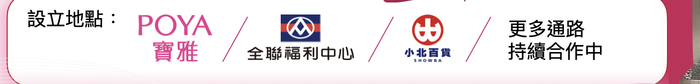
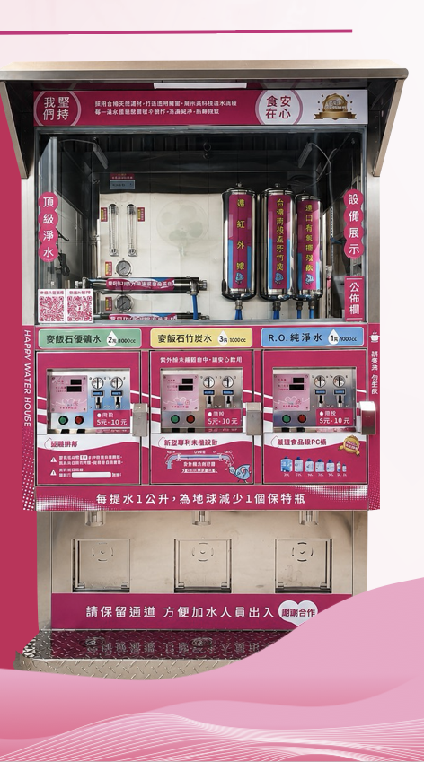

第一段 · 隱形的商機
不一樣的生意，源源不絕的賺錢方式
這是一門邏輯跟一般開店創業完全不同的生意。加水站不是服務特定族群，而是服務每一個需要喝水的人——每天都有人需要喝水，所以每天都有市場。真正不同的，不是產品，而是商業模式：餐飲經營的是流行，加水站經營的是每天都會發生的生活需求。
一般餐飲加盟
- 人事成本高
- 食材容易損耗
- 天天備料出餐
- 受流行趨勢影響
- 競爭品牌多
- 缺工影響營運
- 生意波動較大
加盟加水站（幸福水屋）
- 24 小時營運
- 民生剛性需求
- 高回購率
- 食材零損耗
- 人力需求低
- 現金流穩定
- 不受流行影響，可長期經營
第二段 · 隱形的冠軍
不是剛起步的新創，是已經默默做到 400 家規模的老品牌
業務跟加盟主介紹方案時，最容易被問的一句話是：「這家公司做得起來嗎、會不會做一半就收掉？」這一段就是用來回答這個問題——幸福水屋不是新創業者，是已經在這個利基市場低調深耕、做到全台約 400 家門市規模的品牌。
更具體的證據是：這 400 多家門市，有很大一部分是設立在全台知名的連鎖通路裡——這代表幸福水屋已經通過這些通路自己的品質審核與長期合作評估，不是路邊隨便擺一台設備。


跟加盟主介紹時，可以直接把這張實機照片給他們看——三段式濾芯清楚展示、投幣操作面板、食安認證標章都在機台上公開陳列，這不是概念圖，是全台 400 多家門市正在使用的同一套設備。加盟主看到的是「已經在運作的東西」，而不是一張還沒實現的企劃書。
也因為已經有這樣的規模，幸福水屋長期經營的核心模式是「特許加盟方案」——加盟主負擔設備費，每月直接依 60% / 40% 結算分潤，3 年一約，是目前品牌主要、長期在跑的加盟形式，完整條件可以到方案比較頁看。
第三段 · 擴大經營的關鍵
不是設備不夠，是需要更多在地夥伴
法規修法在高雄率先出現變化，讓市場重新洗牌、黃金點位重新釋出——這是幸福水屋從 400 家擴大到 800 家的機會。但經營層面上，真正決定生意好壞的關鍵是即時服務：水質要巡檢、設備要維護、消費者反映要當天處理。高雄區域目前的據點數還不多，總部很難只靠自己把每個新點位都顧好，真正需要的是找到更多願意投入、留在當地服務的夥伴。
這就是為什麼幸福水屋現在積極找的，不是能出錢的投資人，而是願意留在當地、把服務做好的夥伴。
第四段 · 先體驗，再買賣
用「先試營運」的方式，找到願意留在當地的夥伴
與其要求一次到位的長期承諾，不如讓總部跟加盟主先透過實際經營互相確認合適，這樣比較務實。這就是陪跑方案的邏輯——鎖定像高雄這類目前據點還不多的區域，是這次加盟展限定的招募專案，用保證毛利＋分潤降低起步風險；做起來的站點，之後可以單向升級為長期的特許加盟方案。點開下面每個階段，一步一步看它怎麼運作。
開始陪跑
先試用，不是一次繳清綁死
履約期間
每週維護、每月撥保底
合約結束
三種收尾方式，都不吃虧
- 合約正常屆滿（4 年）：保證金 450,000 全額退還
- 加盟主主動退約：依經營時間分級退還，越晚退越多（詳見方案比較頁的退約試算）
- 總部主動終止：保證金一樣全額退還，加盟主已有的保底與分潤權益不受影響
業務可以這樣回答「這是不是吸金」的疑慮
- 錢流向哪裡查得到：營業收入以設備計數系統、讀表紀錄、水電繳費單為準，加盟主可以隨時對帳，不是總部口頭說了算。
- 保證金不是拿去周轉：合約明訂保證金只作履約擔保，不得任意動用，正常經營、合約終止都會退還或部分退還。
- 收益不是靠「拉人頭」：加盟主的收入來自加水站實際營業額分潤，跟有沒有再找到下一個加盟主完全無關。
- 退場機制寫在合約裡，不是事後才講：提前退約的退還比例、懲罰性違約金級距，簽約當下就白紙黑字列出來。
第五段 · 加盟主真正押進去的錢，比想像中少
把「風險」講清楚，比只講「保底」更有說服力
業務常常只強調保底跟分潤，但加盟主真正在意的是「萬一不行了，我損失多少」。這裡把陪跑方案的費用拆成兩種性質，講清楚才不會讓人覺得只是話術。
真正花掉、不會拿回的錢
- 教育訓練費 40,000 元
- 水電到位費 38,000 元
- 品牌授權費 600 元 × 48 個月＝28,800 元
合計 106,800 元 — 這才是加盟主真正的沉沒成本
有條件流動、不是消費掉的錢
- 設備租賃保證金 450,000 元
- 正常經營走完合約：全額退還
- 提前退約：依經營時間分級退還（50%～100%）
這筆錢的性質是履約擔保，不是加盟主的消費支出
對照一般連鎖餐飲加盟，光是加盟金、裝潢、設備動輒上百萬元，而且幾乎全數不可退還，還要另外背人事跟食材成本。陪跑方案讓加盟主真正曝險的金額只有 106,800 元，這是業務可以主動點出的差異，而不是只等加盟主自己去比較。